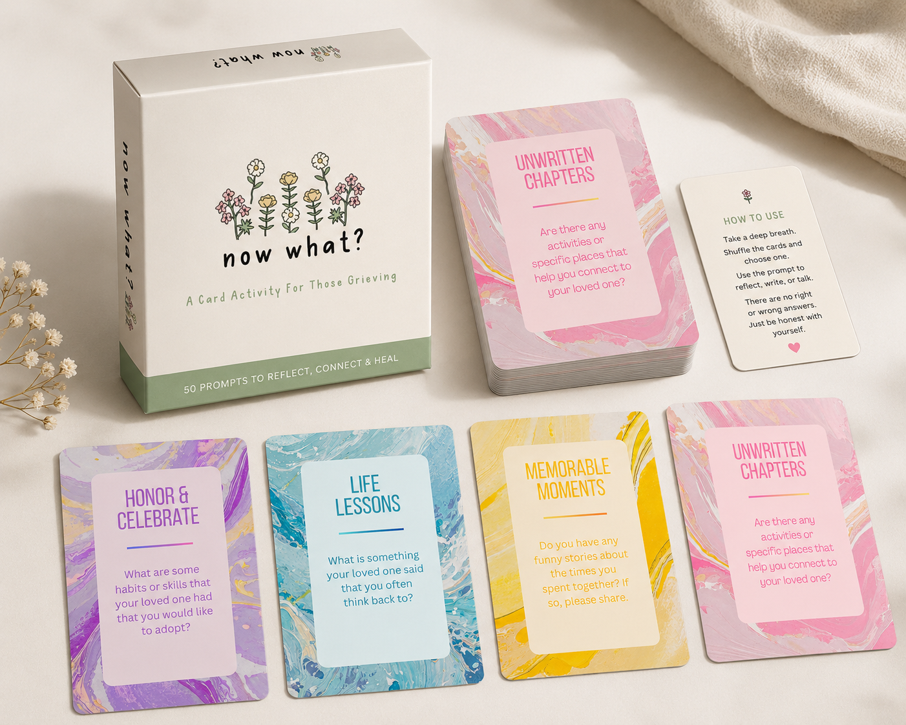

A card conversation activity to bring family, friends, and those in mourning together during times of grief. Designed at Drexel University.
———
FIG 1. Logo for "Now What?"
The Context
Grief is disorienting and isolating, and many people, especially adolescents, want to reach out to friends and family to share their feelings, but don't know how to start those conversations. There is a gap between the desire for connection and the ability to initiate it: death is still a topic most people haven't been given tools to talk about. The challenge was to design something that could hold space for a genuinely difficult human experience without requiring professional facilitation, cultural uniformity, or a perfect set of words.
FIG 2. Sample cards from the card set.
The Approach
Working within a human-centered design framework, the project moved through the full arc of design methodology: contextual inquiry and observation to understand how people currently navigate grief, persona creation, affinity diagramming, speculative design, and "How Might We" reframing before a single prototype was built. The result was Now What?, a reusable card conversation set with prompt cards, written instructions, and a blank card option so participants can create their own questions. Visual design decisions were grounded in research on how different cultures relate color and imagery to death and mourning. Two rounds of user testing, synchronous interviews and an asynchronous Lyssna survey with 20 participants across the US, UK, Brazil, and Europe, surfaced specific friction points that shaped every revision.
FIG 3. Card set physical prototype.

The Results
Testing revealed that participants understood the activity's emotional purpose clearly, but needed more explicit structure around the mechanics: what to do with cards once answered, what signals the activity is over, and who counts as "grieving" (the prompt language initially implied only death-related grief). Font legibility, card handling, and the reusability of blank prompt cards were all addressed in the final version. The revised Now What? is more universally readable, more culturally considered, and clearer in scope. Like the best human-centered design work, it doesn't avoid something hard, it makes it easier to navigate.